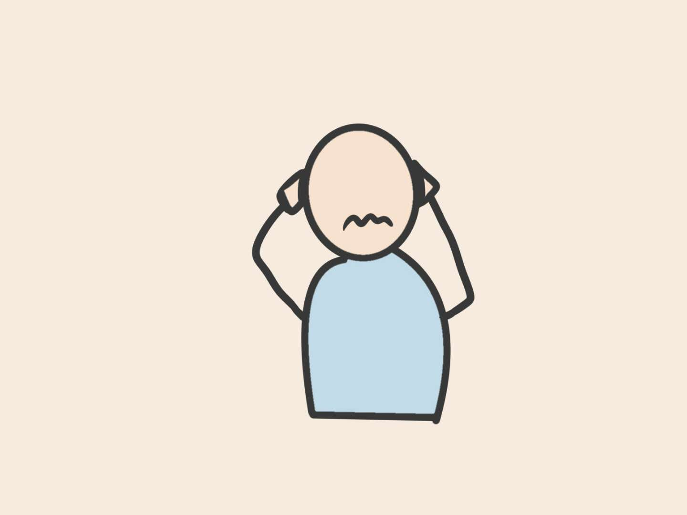

On the bed, I just can't relax.
I keep on thinking the unfinished assignments more and more.
Maybe I should wake up at 6 AM in the morning to finish the remaining work?
Maybe I should ask for an extension?
What would be the grade of this assignment? It must be terrible...
Am I being too passive for all these assignments?
Maybe I should have planned before hand multiple days ago? Maybe even weeks ago?
Maybe I should have started on the assignments earlier...
In my mind, it just never feel relaxing enough for me to fall asleep.
With these accumulating thoughts, I eventually fall alseep...the day finally ends.
Even with my unwillingness, a new day starts.